影片简介
《龙猫》（となりのトトロ）是吉卜力工作室与德间书店于1988年推出的动画电影，由宫崎骏执导。这部电影描绘了日本在经济高度发展前存在的美丽自然，只有孩子才能看见的不可思议世界和丰富的想像。
本片荣获第13回报知电影奖最佳导演奖等24项大奖，龙猫这个角色也成为吉卜力工作室的徽号及吉祥物，在之后每部吉卜力工作室影片的片头出现。
电影片段
观看《龙猫》经典片段，感受这份纯真的美好。
剧情概述
小月的母亲生病住院了，父亲带着她与四岁的妹妹小梅到乡间的居住。她们对那里的环境都感到十分新奇，也发现了很多有趣的事情。
她们遇到了很多小精灵，来到属于她们的环境中，看到了她们世界中很多的奇怪事物，更与一只大大胖胖的龙猫成为了朋友。龙猫与小精灵们利用他们的神奇力量，为小月与妹妹带来了很多神奇的景观，令她们大开眼界。
一天，妹妹小梅独自出发去医院看望母亲，途中迷路了。小月只好寻找龙猫及小精灵朋友们帮助...
主要角色
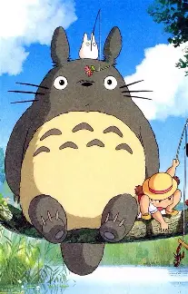
龙猫
森林的守护者，体型巨大但性格温和，拥有神奇的力量，只有纯真的孩子才能看见它。
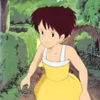
小月
11岁的姐姐，懂事坚强，在母亲住院期间负责照顾妹妹小梅。
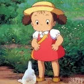
小梅
4岁的妹妹，活泼好奇，第一个发现龙猫存在的人。
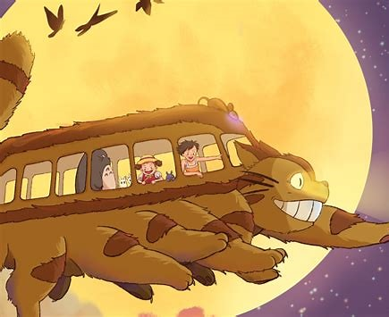
猫巴士
有12只脚的巨大猫型巴士，眼睛是车灯，可以隐形飞行，是龙猫的交通工具。
精彩剧照
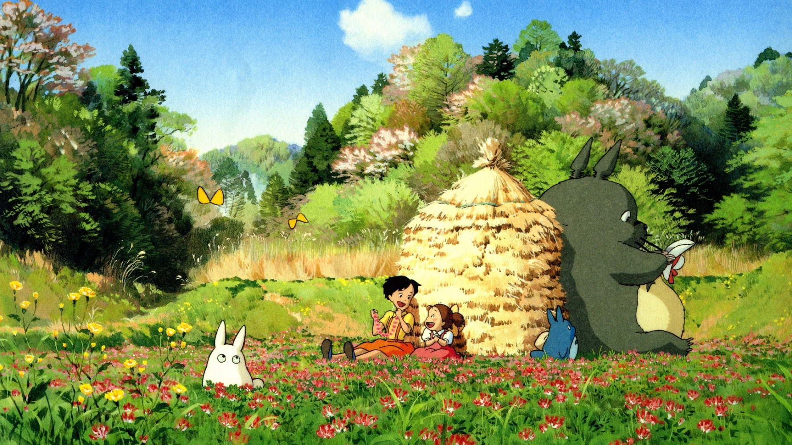
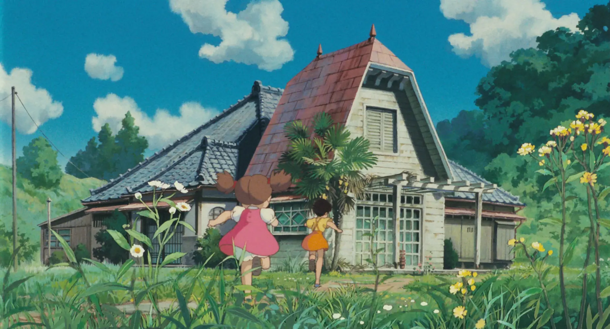
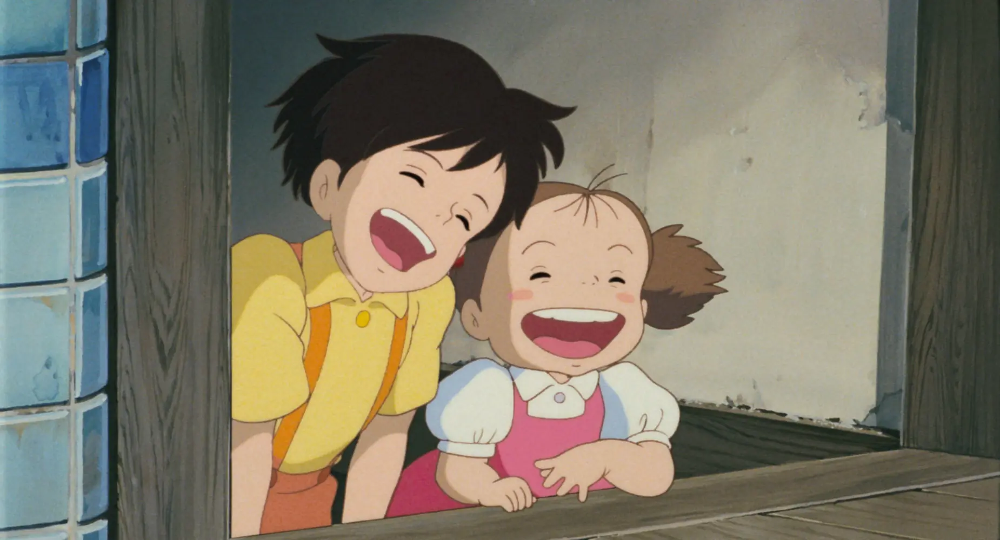
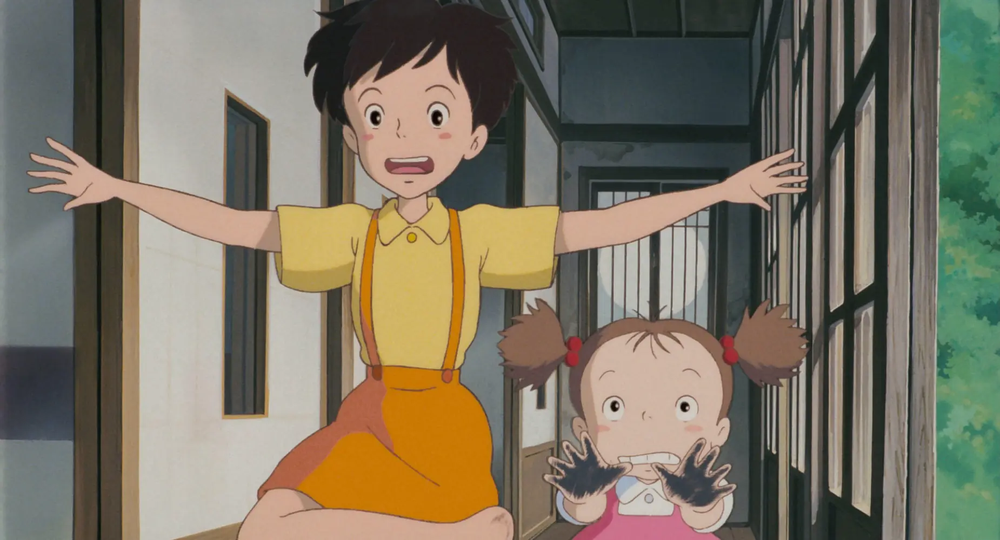
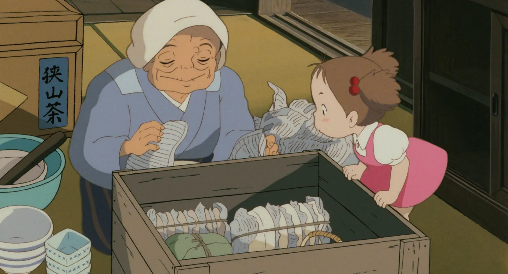
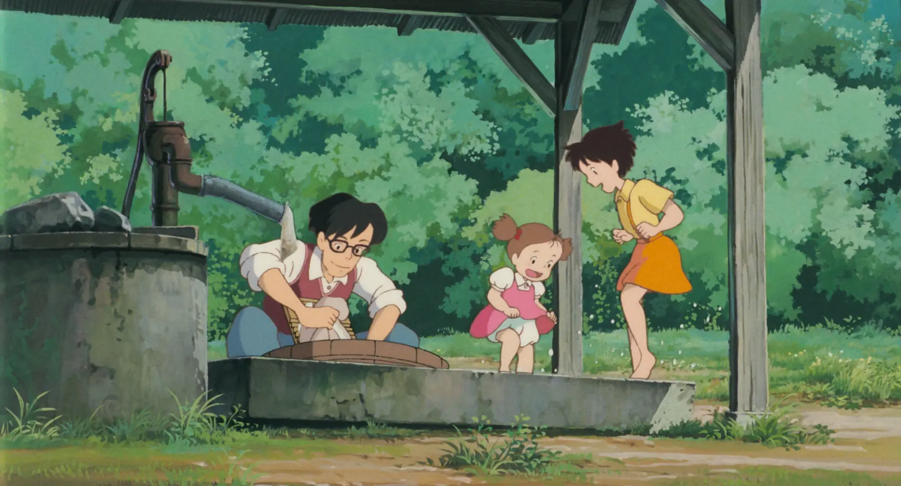
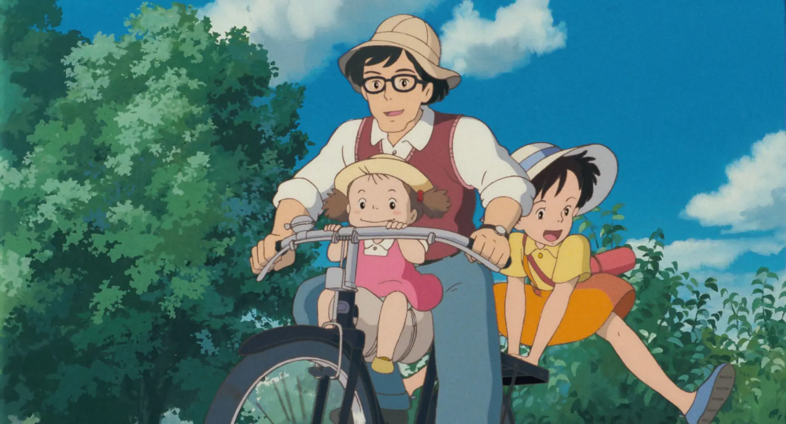
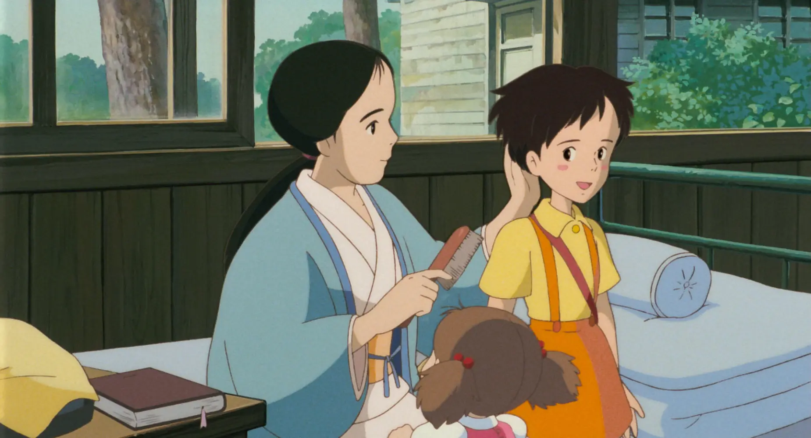